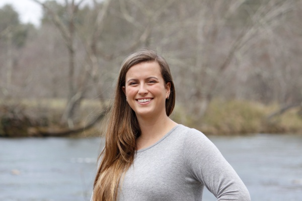

My name is Lynsi Nickerson. I am currently a junior level student studying at Florida Gulf Coast University. I am pursuing a B.S. Degree in Software Engineering with a minor in Digital Media Design. I aim to obtain this degree by the year 2020. My prefered future career is in the field of either computer applications software development or web development, but I am waiting until I get further into my degree program to choose definitely. I am very passionate about computers and computer software. I have always been extremely interested in these things for as long as I can remember. I hope that I am able to join a career one day where I can truly pour out my love for computers and make life better for everyone through whatever I create.
 Pictured above: Me